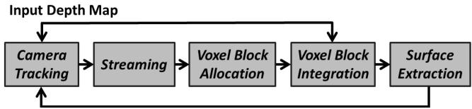
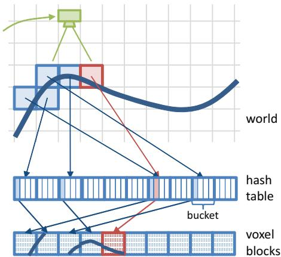
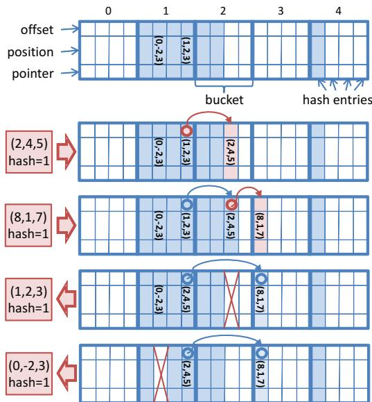
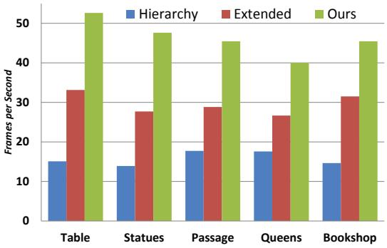

本节目标
读完你应该能：复述原文「内存墙」原话与内存数字对比；讲清哈希函数、两个 struct 的字节数、冲突的桶+链处理；说出 GPU 哈希的四个难点及解法；理解「只在表面附近分配体素块」的稀疏逻辑。
和前面课程怎么接
接 0033：以「上一节的内存撞在哪」开场，主线是「数学不变、容器变了」。接 0023：PCL 讲的是 CPU 侧点云降采样/最近邻，本节是 GPU 侧的体素容器。并回收第一季悬念③的一半——空间索引结构为「增量更新 + 稀疏」服务，写法各有取舍（ikd-Tree 留到阶段 D）。
1. 上一节的内存墙，这一节怎么打
先复述上一节 0033 的痛点：KinectFusion 用规则体素网格，把空空间也密密地存，于是「7 m³ 就到顶」。本节一开场就点名了这个具体缺陷，原文 §2 原话：
★ 原文原话（务必引用）
this approach suffers from one major limitation: the use of a regular voxel grid imposes a large memory footprint, representing both empty space and surfaces densely, and thus fails to reconstruct larger scenes without compromising quality.（这种方法有一个主要局限：规则体素网格占用大内存，把空空间和表面都密集表示，因此无法在不牺牲质量的前提下重建更大场景。）
接着是内存数字对比（§9.1，抄准）：本文哈希方案平均 <300 MB 存表面数据（带颜色 <600 MB），而「a regular grid that would require well over 5 GB (including color)」——在同样的 8 mm 体素、8 m 深度范围下。一句话：同一个场景，规则网格要 5 GB 以上，哈希只要几百 MB。降低一个数量级的内存，这是本节的命根子。
原文还顺手批评了其他扩容路线：移动体积法（moving volume）「streaming is one-way and lossy」（流式是单向且有损的）；八叉树/层次结构「tree traversal leads to thread divergence」（树遍历导致线程发散）、且「only real-time on specific scenes, and on very high-end graphics hardware」（只在特定场景、且要在很高端的显卡上才实时）。
怎么看这张图：这是开场成果图，直接打上一节「7 m³ 天花板」的脸——20 m 宽、4 m 高的场景，不到 5 分钟在线重建完，还没做任何后处理。它直观说明：容器一换，能建的范围就从小房间跳到了大空间。
2. 在线重建的四类与扩容三路线
§2 先把在线重建（online reconstruction）分成四类，再在 volumetric 内部细分扩容路线。做成一张表，方便你横向比：
| 大类 | 代表方法 | 短板（原文点名） |
|---|---|---|
| parametric（参数化） | mesh zippering 等 | 接缝、参数化难覆盖复杂拓扑 |
| point-based（点基） | 点云 | 不直接给表面、难做遮挡/物理 |
| height-map（2.5D 高度图） | 单层/多层高度场 | 只能表达单层表面，悬挑/洞穴不行 |
| volumetric implicit（体素隐式） | SDF / TSDF | 规则网格内存爆炸（本节要修） |
重点在最后一行 volumetric implicit 内部的三条扩容路线：
regular grid（规则网格）
KinectFusion 用的，简单但内存爆炸。
moving volume（移动体积）
流式单向且有损，原文不取。
hierarchical（层次）
八叉树、N³ 等；树遍历线程发散，需高端显卡。
本节选的是一条不同于这三者的路——哈希表 + 固定大小的体素块，既稀疏又对 GPU 友好。下面讲它怎么搭。

怎么看这张图：把它和上一节 0033 的 Figure 3 对照看——流程几乎一模一样（测量 → 融合 → raycast → ICP），唯一变了的是「体素数据存在哪」。上一节是规则网格，这一节是哈希表。这就是「数学不变、容器变了」的视觉证据。
3. ★ 关键公式与数据结构
先讲哈希函数。它把「无限世界坐标」压进「有限哈希表」：
其中 $(x,y,z)$ 是体素块的整数世界坐标，$\oplus$ 是按位异或（XOR），$\bmod n$ 把结果压进长度为 $n$ 的表。这三个质数 $p_1,p_2,p_3$ 取自 Teschner et al. 2003，是计算机图形里哈希空间坐标的经典配方。打比方：哈希就像图书馆书架编号——世界是无限大的书库，哈希函数把「第几区第几架第几层」（x,y,z）算成一个「书架号」，所有书（体素块）按号上架；你找某本书时，用同样的公式一算就知道去哪个书架，不用从第一排遍历到最后一排。
再看两个 struct 的精确字节数——这些数字很有说服力，请记牢：
也就是说：一个体素块是 $8\times8\times8=512$ 个体素，每块 512×8 B = 4 KB；哈希表里每个条目只占 12 字节，登记「这个块在世界哪、存在堆的哪」。因为 TSDF 只在表面附近有效，绝大多数体素块根本不会被分配，内存自然省下来。
冲突处理（§4.1）
哈希表按唯一哈希值分桶（bucket），桶内顺序存少量项（实验取 bucket size = 2）。桶满时「append a linked list entry」——把桶内最后一项的 offset 当链表头，后续项用 offset 串起来，并「linearly search across the hash table for a free slot」（在表里线性找空槽）。检索时「linearly search within the bucket」并遍历链表。这就是经典的桶 + 链式溢出。

怎么看这张图：这是本节头号图，把「无限世界 → 有限哈希表」画活了。左边是想象中的无限均匀网格（世界坐标），中间哈希函数把它映射进右边有限长的哈希表；只有被观测到的那些块（蓝条）真正占位置，大片空网格根本不出现。这就是稀疏性的来源。

怎么看这张图：它专门讲冲突处理。白色是空槽，蓝色是已占用条目；一个桶里放两个（bucket size = 2），桶满就溢出成链表。注意图里同一桶的项用箭头串起来——这正是正文「offset 当链表头」的可视化。
4. ★ 稀疏性：只在表面附近分配
为什么哈希能省内存？核心是稀疏性逻辑（§3，本节的核心逻辑）。因为 TSDF 只在表面附近截断有效，原文说：
★ 稀疏性依据（§3）
the majority of data stored in the regular voxel grid is marked either as free space or as unobserved space rather than surface data（规则网格里存的大部分数据是被标成自由空间或未观测空间，而不是表面数据）。所以本节只在观测到的表面附近分配体素块。
具体怎么做（§5）：沿每条深度射线，用 DDA（Digital Differential Analyzer，数字微分分析器）算法求出与截断区相交的那些体素块，只给这些块分配内存。DDA 就是「一步步跨格子、顺着射线前进」的整数网格行走法，能高效列出射线穿过的块，而不必遍历整张体积。这样，一个房间 99% 的空体素块永远不会被分配——内存开销只和「表面面积」成正比，而不是和「房间体积」成正比。这正是相对规则网格的降维打击。
5. ★ GPU 上做哈希的四个难点与解法
把哈希搬到 GPU 上有四个具体坑，原文 §4.2、§5 逐条给了解法。这是本节真正的工程内容，请逐条看：
① 并发插入竞态
多射线同时想往同一桶插块会打架。解法是「lock a bucket atomically for writing when a suitable empty position is found」（找到空位时原子锁住桶再写）；同一桶的其他分配推迟到下一帧。关键理由：因为 Curless–Levoy 融合是 order-independent（与顺序无关），推迟一帧不损质量。
② 删除时的链表指针维护
直接删桶内非头元素无需同步；需要改链表则原子锁桶，避免指针断链。
③ 堆内存管理
GPU 上预分配线性 heap，用「空闲块索引表」（free list）管理，原子地增减表尾指针来借/还块。
④ 并行选出待积分块
先标记 occupied & visible，再用 three-level up/down 并行前缀和（scan）压缩到连续小数组，避免遍历空桶浪费算力。
这里有两个术语值得停一下。原子操作（atomic operation）：像「多人抢同一支笔签字」，原子锁保证同一时刻只有一个人能写，别人要么等要么改去别处——GPU 上千个线程并发，靠它防止互相覆盖。前缀和（prefix sum / scan）：把一个数组逐项累加，得到「前 i 项之和」；GPU 用它把「哪些块要处理」快速压缩成一张紧凑列表，跳过海量空桶。这两个技巧是 GPU 数据结构的基础功。
互动判断
Voxel Hashing 把「同一桶的并发插入」推迟到下一帧，为什么不损质量？
6. 大场景流式：球状活动区
要重建「整栋楼」，还得解决「世界比显存大」的问题。§8 的方案是：以相机为中心定义一个球状活动区——Kinect 深度上限 8 m，于是球心放在相机前方 4 m、半径 8 m。只在这个球里保有精细体素，球外的存到主机内存。
两个方向的搬运：
GPU → Host（流出）
逐块判断「出区」，删除哈希项、拷出、清块、把块位置还回 heap；host 上按 1 m³ chunk 用链表组织。
Host → GPU（流入）
以 chunk 为单位整块搬，且「staggered, one chunk per frame」（每帧只搬一块，受 CPU 算力限制）；用一张 occupancy bit grid 防重复分配（256³ m³ 仅占 512 KB）。
注意「每帧只搬一块」是 CPU 算力的硬限制——这也是后面 0035 还会遇到的「on-board 算力紧」主题的先声。
7. 实验数字与结论
§9 的数字要抄准，它们证明「换容器」确实又快又省：
硬件 / 传感器
i7 3.4 GHz / 16 GB / GTX Titan；Asus Xtion 与 Kinect for Windows，均 RGB-D 30 Hz。
速度
全流程平均 21.8 ms（≈46 fps）：ICP 位姿 8.0 ms（37%，15 次迭代）、表面融合 4.6 ms（21%）、表面提取与着色 4.8 ms（22%）、流式与输入 4.4 ms（20%）。对比 Hierarchical Fusion 全流程约 15 Hz（低于输入帧率，丢帧 + 漂移）。
内存 / 规模
哈希表 + 辅助缓冲共 34 MB（$2^{21}$ 项 × 12 B，bucket=2 ⇒ ≈100 万桶）；heap 预分配 1 GB ⇒ $2^{18}$ 个体素块；平均分配约 140K 体素块（8 mm）；桶溢出仅 0.1%，最长链表为 3，全场景约 700 条链表项。
场景尺度
STATUES ≈ 20 m 长、4 m 高、<5 分钟；PASSAGEWAY ≈ 30 m；QUEENS ≈ 16 m × 12 m × 2 m、约 4 分钟；BOOKSHOP 三层、<6 分钟。体素：Fig. 8/10 用 4 mm，Fig. 1/9/11 用 10 mm；也试过 <2 mm 无明显提升。
结论是：数据结构的性能余量「可用于增加 ICP 迭代次数以提升精度」；作者坦承本方法仍有小漂移，但质量可与离线多遍全局优化相比，且可作在线预览 + 离线精修的组合。注意那个关键差距——46 fps vs 15 Hz：本节比层次法快到超过输入帧率，而层次法低于帧率，会丢帧并转化为漂移。

怎么看这张图：这是「46 fps vs 15 Hz」的关键证据图。本文（hline）在各场景都稳在 40+ fps，而对比的层次法（灰）和移动体积法（其他）明显更低、且随场景变大掉得更狠。帧率够高才不丢帧，这也间接解释了为什么层次法会漂——下一节会把这个「帧率不足→漂移」讲得更透。
8. 局限、OCR 修正与收尾
逐条讲清局限：
无显式漂移校正
原文：no drift correction is explicitly handled、our method does suffer from small drifts。它靠高帧率压住漂移，但没回环校正。
更复杂的哈希法
perfect hashing 等「how these methods deal with the high throughput … is unclear」——高吞吐下是否可行未知。
经验参数
bucket size / 表长是拍的；表长过小会让占用率飙到 65%/81%，耗时从 ~21 ms 升到 24.8/25.6 ms。
室外 / 流式限制
室外 IR 质量「affected significantly」；host→GPU 只能每帧一块，受 CPU 限制。
OCR 提醒
§4 中 `$8^{\overset{\triangledown}{3}}$` 的 `▽` 是版式残留，应为 $8^3$；struct 定义末尾的 `}i` 应为 `};`；多处体素数被加杂符，应为 $2^{21}$ / $2^{18}$（原文语义：$2^{21}$ 项只索引 $2^{18}$ 个体素块，resulting in a low hash occupancy）。作者名 `Niessner`/`Niesner` 同一人（Nießner）。
收尾衔接：本节做的是「只看不动的地图」——它解决了 0033 的内存墙，让稠密模型能撑起大场景，但地图仍然只为「看」（渲染、重建）服务。下一节 0035 要把地图接到「动」上：给机器人做规划。注意本节已把「稀疏体素容器」这件事做到极致，0035 会直接沿用这套哈希，把 TSDF 换成 ESDF。
课后练习
展开查看答案
练习 1：用原文原话说明 KinectFusion 的内存缺陷，并给出本节的内存数字对比（同 8 mm、8 m 条件）。
答：原话：regular voxel grid imposes a large memory footprint, representing both empty space and surfaces densely, fails to reconstruct larger scenes without compromising quality。对比：哈希平均 <300 MB（带色 <600 MB），规则网格 well over 5 GB（含色）。
展开查看答案
练习 2：哈希函数 $H(x,y,z)$ 把无限世界映射到有限表，请用生活类比说明，并解释 ⊕ 和 mod 各起什么作用。
答：像图书馆书架编号：世界坐标 (x,y,z) 是「区/架/层」，哈希算成「书架号」上架、按号取书。⊕（异或）把三维坐标搅成一个数，mod n 把这个数压进长度 n 的有限表，使无限坐标落到有限槽位。
展开查看答案
练习 3：Voxel 和 HashEntry 各多少字节？为什么「只在表面附近分配体素块」能省内存？
答：Voxel 8 字节，HashEntry 12 字节，块固定 8³。因为 TSDF 只在表面附近截断有效，规则网格里多数体素是自由/未观测空间；用 DDA 沿射线只给与截断区相交的块分配，内存开销随表面面积而非房间体积增长。
展开查看答案
练习 4：冲突（哈希碰撞）怎么处理？bucket size 取多少？最长链表多长？
答：桶 + 链式溢出：哈希表分桶，桶内顺序存（实验 bucket size = 2），桶满则把最后一项的 offset 当链表头串下去，检索时线性搜桶内并遍历链表。实验中桶溢出仅 0.1%，最长链表为 3，全场景约 700 条链表项。
展开查看答案
练习 5：GPU 哈希四个难点里，为什么「并发插入推迟到下一帧」是安全的？它和 0033 的哪个性质直接相关？
答：因为 Curless–Levoy 体融合是 order-independent（与顺序无关），哪帧插进去数学等价，所以原子锁桶后把同桶其余插入推迟一帧不损质量。这直接接 0033 的「加权滑动平均可增量获得」——融合本身对顺序不敏感。